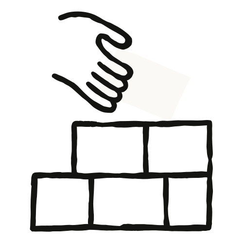
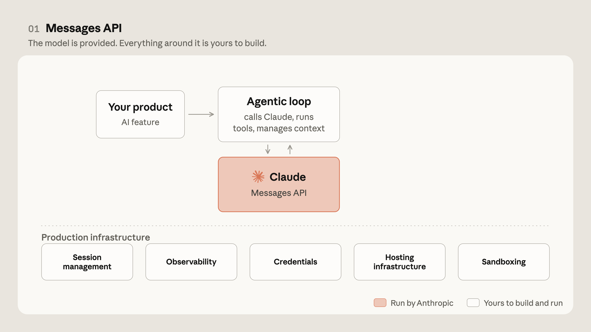
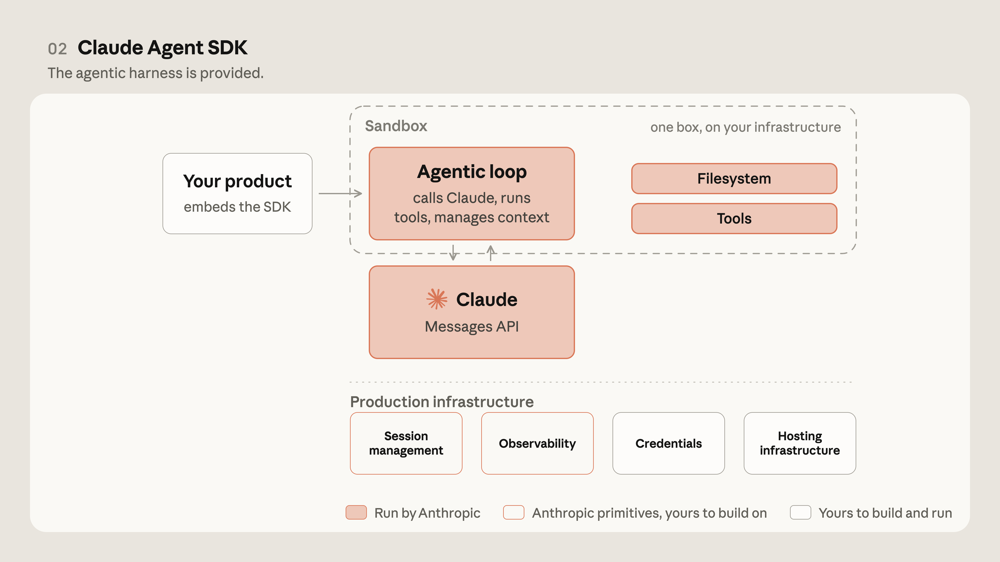
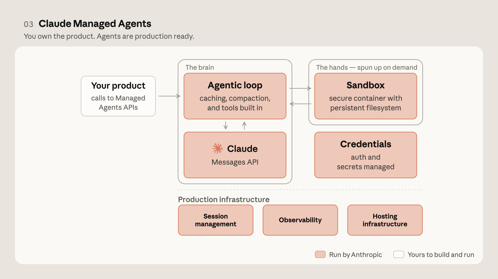
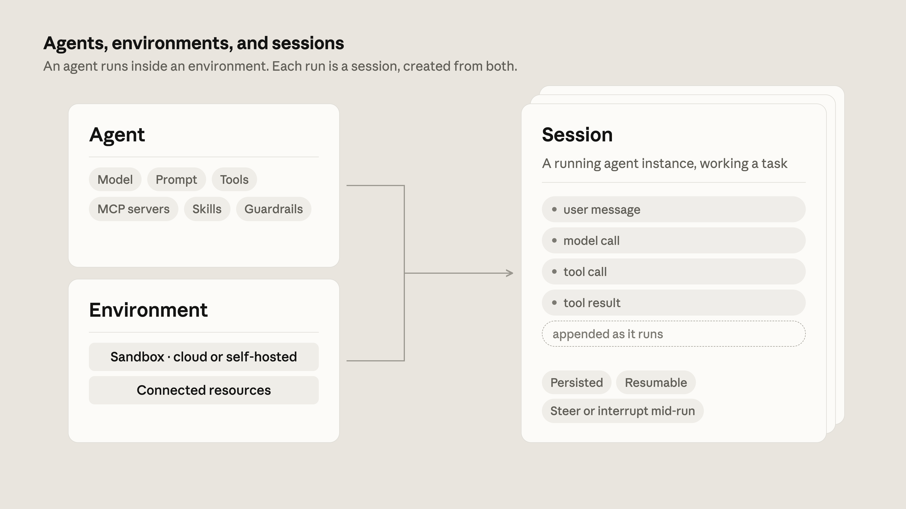
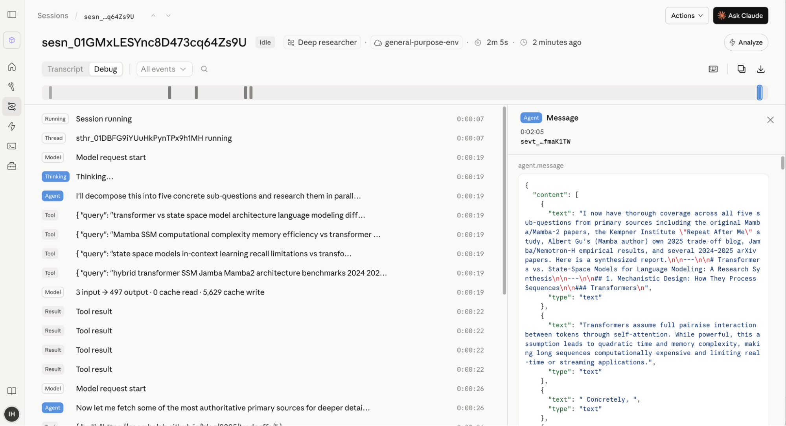
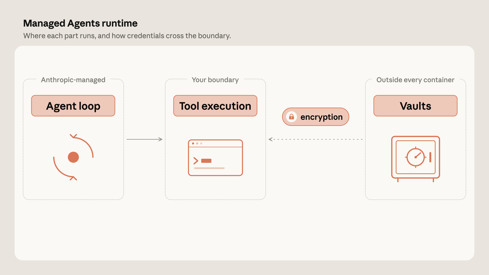
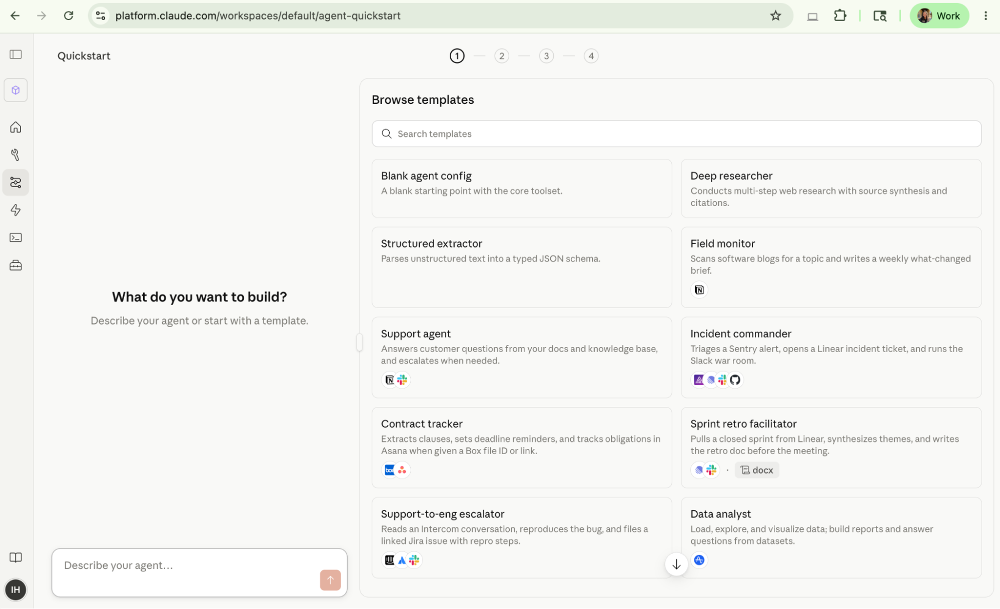
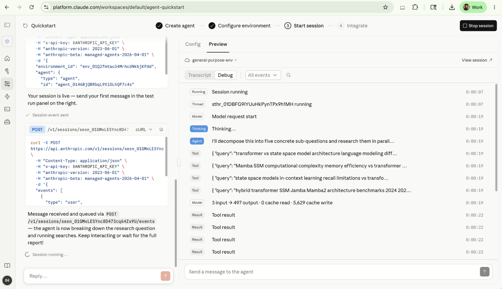
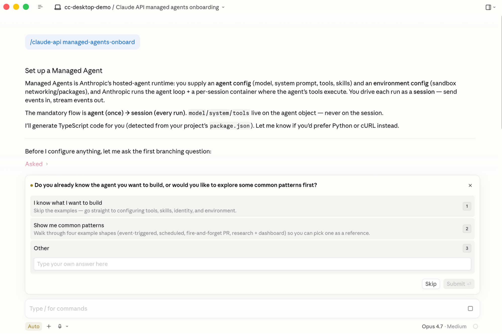

에이전트를 프로덕션에 올리려면 좋은 프롬프트 하나만으로는 부족합니다. 프로토타입과 프로덕션 에이전트를 가르는 것은 인프라입니다. Claude Managed Agents는 프로덕션급 에이전트를 만들고 배포하기 위한 조합형(composable) API를 제공해, 팀이 프로토타입에서 출시까지 가는 데 걸리는 시간을 몇 달이 아니라 며칠로 줄여 줍니다.
2023년 Claude가 개발자에게 처음 공개되었을 때 API는 단순했습니다. 토큰이 들어가고, 토큰이 나오는 식이었죠. 시간이 흐르면서 개발자들은 Claude가 작업을 처음부터 끝까지 완수하기를, 즉 정보를 조회하고, 행동을 취하고, 다음 단계를 스스로 결정하기를 원하게 되었습니다. 그것도 코드베이스나 티켓팅 시스템 같은 기존 시스템 안에서 동작하는 형태로 말이죠.

API만으로 에이전트를 만든다는 것은 곧 자신만의 루프(loop)를 직접 구성한다는 의미였습니다. 모델에 요청을 보내고, 도구를 실행하고, 결과를 다시 모델에 넣어 주는 과정을 반복하는 것이죠. 개발자들은 모델이 발전할 때마다 함께 튜닝해야 하는 스캐폴딩(scaffolding)을 직접 유지해야 했습니다.

2025년에 출시된 Claude Code는 자체적인 에이전트 하니스(harness)를 품고 있었습니다. 개발자들은 자연스럽게 자신의 에이전트에도 같은 기계 장치를 쓰고 싶어 했습니다. 그 결과 탄생한 것이 Claude Agent SDK입니다. 직접 만든 루프를 유지하는 대신, Claude Code와 동일한 기계 장치를 사용해 에이전트를 만들 수 있게 된 것이죠.

하지만 에이전트를 프로덕션에 배포하는 일에는 여러 가지 난관이 있었습니다.
Managed Agents는 "두뇌를 손에서 분리"(decoupling the brain from the hands)함으로써 이 문제들을 해결합니다. 하니스는 코드를 실행하는 샌드박스(sandbox)와 별개로 동작합니다. 그리고 둘을 이어 주는 것이 바로 세션(session)입니다. 세션은 모델 호출, 도구 호출, 그 결과를 기록한 추가 전용(append-only) 로그입니다. 이 구조 덕분에 Claude는 컨테이너가 존재하기도 전에 추론을 시작할 수 있고, 자격 증명을 실행 가능한 코드로부터 멀리 떨어뜨려 둘 수 있습니다.
사용자는 작업(task), 도구(tool), 가드레일(guardrail)을 정의합니다. 그러면 Anthropic이 에이전트를 실행하고, 오케스트레이션과 복구, 그리고 멀티 에이전트 조율(coordination)을 책임집니다.

에이전트 하니스는 모델의 지능에 맞추어 함께 진화해야 합니다. 예를 들어 Claude Sonnet 4.5는 토큰 한계에 가까워지면 "컨텍스트 불안(context anxiety)"을 보였고, 그 때문에 컨텍스트 리셋이 필요했습니다(the agent breaks down). 이 현상은 Claude Opus 4.5에서 사라졌고, 그러면서 같은 리셋 작업은 오히려 불필요한 부담이 되었습니다.
대부분의 조직은 하니스를 직접 유지해서는 안 됩니다. 하니스는 제품을 차별화해 주지 않는 부담일 뿐입니다. Claude Managed Agents를 쓰면 하니스가 모델과 함께 진화하므로, 팀은 컨텍스트 관리와 도메인 전문성에 집중할 수 있습니다.
Managed Agents는 세 가지 리소스를 중심으로 구성됩니다.
모든 것이 하나의 컨테이너 안에서 실행되면, 생성된 코드가 자격 증명 바로 옆에 놓이게 되어 프롬프트 인젝션(prompt injection)을 통해 토큰이 유출될 위험이 생깁니다. Managed Agents는 아키텍처를 분리합니다. 자격 증명은 별도의 볼트(vault)에 보관되고, 프록시(proxy)가 필요할 때마다 이를 가져와 복호화합니다. 볼트(Vaults)는 저장 전에 봉투 암호화(envelope encryption)를 적용하고, 검증을 위해 서명된 요청 토큰을 사용하면서 자격 증명을 자동으로 처리합니다.
Managed Agents가 없으면, 단지 사고(thinking)만 필요한 세션을 포함해 모든 세션마다 컨테이너가 새로 떠야 합니다. 이 셋업 시간은 첫 응답을 지연시킵니다. Managed Agents는 환경이 병렬로 떠오르는 동안 추론을 시작합니다. 도구가 전혀 필요 없는 세션은 컨테이너를 아예 건너뜁니다. 테스트 결과, 이 방식은 첫 토큰까지 걸리는 시간(time-to-first-token)을 중앙값 기준 약 60%, 가장 느린 경우에는 90% 이상 줄였습니다.
Managed Agents는 요청/응답이 아니라 이벤트(event)를 기반으로 동작합니다. 세션은 모든 모델 호출, 도구 호출, 결과를 에이전트 프로세스 밖의 로그에 기록합니다. 덕분에 실시간 업데이트, 데이터베이스 없이도 가능한 세션 재개(resumption), 삭제하지 않는 한 보존되는 이력, 그리고 깔끔한 재개를 위한 컨테이너 체크포인팅(checkpointing)이 제공됩니다. 예약된 프로세스인 드리밍(Dreaming)은 세션과 메모리 저장소를 검토해 패턴을 추출하고 메모리를 큐레이션하여, 시간이 지남에 따라 에이전트를 개선합니다.

기본적으로 Managed Agents는 빠른 프로덕션 경로를 위해 오케스트레이션과 도구 실행을 Anthropic 관리형 클라우드 컨테이너에 위임합니다. 두뇌가 손에서 분리되어 있기 때문에, 실행은 고객의 가상 사설 클라우드(VPC, Virtual Private Cloud) 안에 둘 수도 있습니다. 자체 호스팅 샌드박스(self-hosted sandboxes)는 코드, 파일시스템, 네트워크 송신(egress)을 고객의 경계 안에 유지합니다. MCP 터널(MCP tunnels)은 Claude가 사설 네트워크 안의 MCP(Model Context Protocol) 서버에 연결할 수 있게 해 주며, 실행과 접근이 일어나는 위치를 정밀하게 제어할 수 있게 합니다.

이 외에도 에이전트가 스스로를 채점하는 아웃컴(outcomes), 멀티 에이전트 오케스트레이션, 권한 정책(permission policies), 웹훅(webhooks) 등의 기능이 추가로 제공됩니다.

Managed Agents는 Claude Code 및 platform.claude.com의 Claude 개발자 콘솔(Developer Console)과 통합됩니다. 콘솔의 퀵스타트는 템플릿이나 평이한 자연어 설명에서 출발해, 몇 분 만에 배포 가능한 프로덕션급 에이전트를 만들어 줍니다.

Claude Code는 기본적으로 /claude-api 스킬을 제공하며, 여기에는 Managed Agents 애플리케이션을 만들기 위한 상세하고 최신인 참고 자료가 담겨 있습니다. /claude-api managed-agents-onboard를 실행하면, 처음부터 새 Managed Agents를 설정하는 인터뷰 방식의 안내(walkthrough)를 받을 수 있습니다.

팀이 Managed Agents로 무언가를 만들수록, 예전에는 프로덕션 인프라에 들이던 개발 시간이 이제는 컨텍스트 관리와 사용자 경험을 다듬는 데로 옮겨 갑니다. 새 모델이 나오면, 팀은 에이전트를 업데이트하고, 평가(evaluation)를 다시 돌리고, 기반 아키텍처는 건드리지 않은 채 개선 사항을 출시하면 됩니다.
글쓴이: Gagan Bhat, Isabella He (Anthropic Applied AI 팀 소속 기술 스태프). 기여자: Hema Thanki, Jess Yan, Molly Vorwerck.